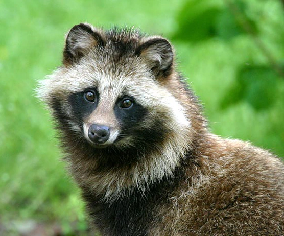

Perfil README de GitHub
Creación de un perfil profesional en GitHub usando Markdown para presentarme como developer.
Estudiante de Bootcamp Full Stack Java

Email: matfroig@gmail.com
Teléfono: +56 9 6111 2545
Ubicación: Paine, Región Metropolitana, Chile
GitHub: github.com/MatRoig
Soy estudiante de desarrollo de software en el bootcamp de Generation, con interés en backend, bases de datos y desarrollo web. Me encuentro fortaleciendo mis habilidades técnicas y mi capacidad para resolver problemas de forma estructurada.
Creación de un perfil profesional en GitHub usando Markdown para presentarme como developer.
Desarrollo de una página básica aplicando estructura HTML5 y etiquetas semánticas.
| Idioma | Nivel |
|---|---|
| Español | Nativo |
| Inglés | Intermedio |